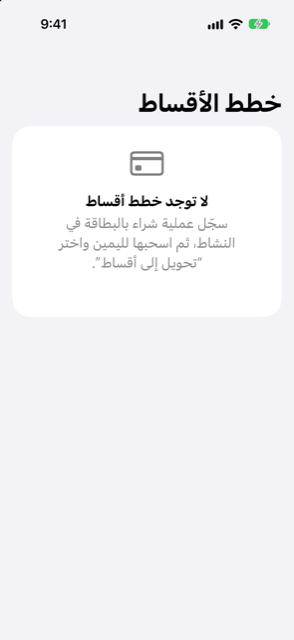

الدليل › التخطيط
خطط الأقساط
قسّم شراءً بالبطاقة على مدى أشهر وشاهد الأثر.
خطة الأقساط هي عملية شراء بالبطاقة يتيح لك بنكك سدادها شهرًا بشهر، وتُحفظ في Damla كدفعات مؤرَّخة لا كفاتورة واحدة كبيرة. تجد الخطط في تبويب الخطة تحت خطط الأقساط، ويحمّل التوقّع كل دفعة في تاريخ استحقاقها حتى تنتهي الخطة.

متى تستخدمها
- وافق بنكك على تحويل عملية شراء بالبطاقة إلى أقساط وأعطاك الأرقام.
- يعرض كشف حساب بالفعل صفوف أقساط (سطر مثل "EMI 2 من 6" ونحو ذلك)، وتريد احتساب الباقي.
- تريد أن ترى الأقساط تنتهي من تلقاء نفسها وأن تعود البطاقة إلى طبيعتها.
- استُردّ ثمن إحدى عمليات الشراء بالكامل، أو أنهى استرجاع البنك الخطة.
خطوة بخطوة
- تأكد من أن عملية الشراء مسجّلة كعملية شراء بالبطاقة، إما يدويًا أو من تنبيه من البنك.
- افتح تبويب النشاط، واعثر على عملية الشراء، واسحبها إلى اليمين ثم انقر تحويل إلى أقساط.
- الشاشة عنوانها تحويل إلى أقساط، وتظهر عملية الشراء ومبلغها في الأعلى تحت عملية شراء. املأ الأرقام كما يذكرها بنكك: القسط الشهري، وعدد الأشهر (من 2 إلى 60، بأزرار زيادة ونقصان)، وإجمالي رسوم الخطة (اختياري)، وتاريخ القسط الأول.
- انقر تحويل.
- يعرض Damla الخطة في تبويب الخطة تحت خطط الأقساط: ما تبقّى سداده، وسطرًا مثل "القسط الشهري × الأشهر أشهر · بقي N · اسم البطاقة"، و"يكلّف X إضافيًا في المجموع" إذا كانت هناك رسوم.
لتجربة خطة دون أن تلتزم بها: في تبويب الخطة، افتح ماذا لو، وانقر إضافة تغيير، واختر نوع الأقساط، واملأ اسمًا والقسط الشهري وعدد الأشهر والتاريخ الأول والحساب الذي ستُدفع منه. لا تصبح الخطة حقيقية إلا عندما تحوّلها.
إخبار Damla بجملة
يمكنك أيضًا كتابتها. الجملة التي تذكر الأقساط أو EMI أو taksit قد تُظهر الأسئلة نفسها ("ما هو القسط الشهري؟"، "كم عدد الأشهر؟"). ولأن الخطة التزامًا، يعرض Damla النتيجة أولًا تحت راجع واحفظ: اسم الخطة والقسط وعدد الأشهر والتاريخ الأول والرسوم إن وُجدت. ولا يُكتب شيء حتى تنقر أنشئ الخطة، التي تقع تحت الملاحظة "هذا ينشئ التزامًا، لذا يرجى مراجعته." وإذا كانت عملية الشراء مقسّطة بالفعل، يقول Damla "هذه المشتريات مقسّطة بالفعل."
من كشف حساب بطاقة
عندما يحتوي كشف حساب بطاقة مستورد على صفوف تبيّن أيّ دفعة هي (EMI 2/6، القسط 3 من 12، taksit 02/06 ونحو ذلك)، يسرد الاستيرادها تحت الأقساط التي تم العثور عليها. ولا يُضاف شيء حتى تؤكّد. تُسجَّل الصفوف تحت الفئة الأقساط، لا كإنفاق يومي، وتبقى خصمًا في فاتورة ذلك الكشف. وتنضم الدفعات التي لم تأتِ بعد إلى خطتك في تواريخ استحقاق البطاقة اللاحقة. وفي كل كشف لاحق يظهر الرقم التالي، وتمضي الخطة قدمًا، ولا تُحتسب أي دفعة مرتين. وتخرج الخطة من التوقّع من تلقاء نفسها بعد الدفعة الأخيرة.
كيف يُحسب المال
استخدم الأرقام من عرض البنك. يقول التذييل في النموذج: "Damla لا يخمّن أسعار الفائدة." وتنبع أرقام الخطة مما تذكره:
- كل دفعة بينها هي القسط الذي ذكرته.
- الدفعة الأخيرة هي ما يجعل مجموع كل الدفعات يساوي الإجمالي تمامًا.
- والإجمالي هو أول ما ينطبق مما يلي: إجمالي ذكره بنكك، وإلا فمبلغ الشراء زائد الرسوم المذكورة، وإلا فالقسط مضروبًا في عدد الأشهر.
- والكلفة الإضافية للخطة هي الفرق بين هذا الإجمالي ومبلغ الشراء.
يتحقق Damla من الأرقام المذكورة: يجب أن تكون المدة 1 شهر على الأقل، وأن يكون القسط والشراء أعلى من الصفر، وأن تكون كل المبالغ بعملة واحدة. وإذا لم تترك الأرقام شيئًا للدفعة الأخيرة، يرفض Damla ذلك ويوضح السبب. ويُحفظ الإجمالي المذكور الذي يختلف كثيرًا عن القسط مضروبًا في عدد الأشهر كتحذير على الخطة. وتحتاج الخطة دائمًا إلى موافقتك قبل كتابتها، لتستطيع مراجعة الأرقام هناك.
جيد أن تعرف
- تبقى عملية الشراء الأصلية في دفاترك كالإنفاق الذي كانت عليه، في اليوم الذي حدثت فيه. وتضيف الخطة كل دفعة في تاريخ استحقاقها حتى تنتهي. وتُستثنى دفعات الأقساط من تقدير الشهر الاعتيادي للبطاقة، فلا تُحتسب مرتين أبدًا.
- تصل كل دفعة إلى التوقّع كدفعة مؤرَّخة خاصة بها، وتتوقف من تلقاء نفسها بعد الأخيرة. والخطة المأخوذة من كشف حساب تسير على تواريخ استحقاق كشوف البطاقة اللاحقة؛ أما الخطة التي تنشئها بنفسك فتسير شهريًا من تاريخ القسط الأول الذي أدخلته.
- اسحب صف الخطة وانقر إلغاء الخطة عندما ينهي البنك الخطة أو يسترجعها، مثلًا عندما يكون ثمن الشراء قد استُرد بالكامل. لا تُحتسب الدفعات بعد ذلك اليوم، ويعرض الصف «ملغاة» بدلًا مما كان متبقّيًا.
- الخطة المأخوذة من كشف حساب تتبع ترقيم البنك نفسه، فتبقى منسجمة حتى لو لم تدخلها يدويًا قط.
- هذه الأرقام تصف جدول دفعات عرضه البنك. واتخاذ الخطة من عدمه، وما تكلّفك عليه، قرارك أنت، وليس نصيحة.
ذات صلة
هل هناك شيء غير واضح أو ناقص؟ اكتب إلى support@raveniq.ai واذكر الصفحة.